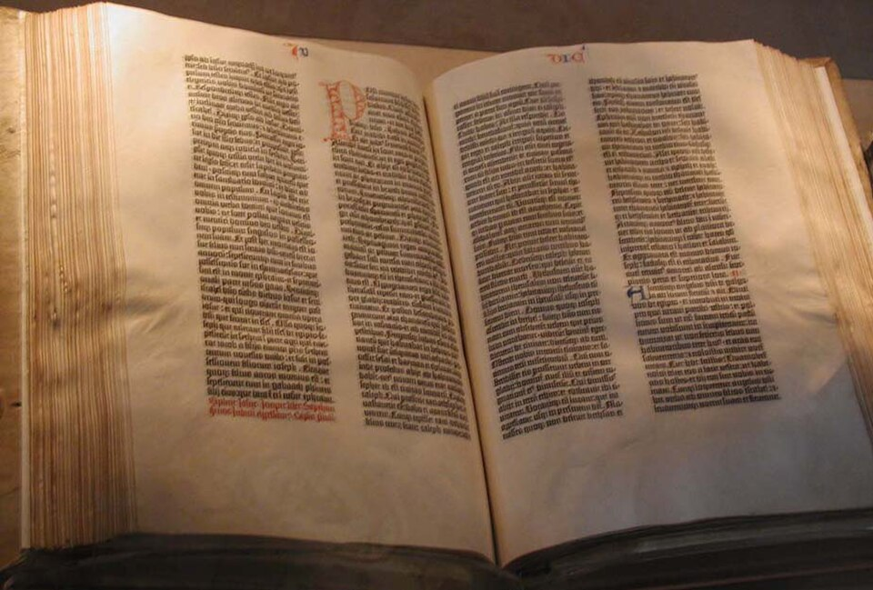

Un orfebre de Maguncia fabrica libros sin escribano: la Biblia, copiada por una máquina
El maestro Johannes Gutenberg ha terminado una edición entera de la Sagrada Escritura compuesta con letras de metal que se acomodan y se prensan sobre el papel. Ciento ochenta ejemplares, todos iguales, a la venta como si un solo monje hubiera copiado ciento ochenta años.

Los mercaderes que vuelven de la feria cuentan maravillas de un taller de esta ciudad donde el orfebre Johannes Gensfleisch, llamado Gutenberg, produce libros por un arte nuevo que no necesita pluma ni escribano. El secreto, celosamente guardado tras años de pleitos y deudas, consiste en letras sueltas fundidas en metal, que se ordenan en líneas, se entintan y se estampan contra el papel con una prensa como la de los lagares. Deshecha la página, las mismas letras sirven para la siguiente: un alfabeto de plomo que puede escribir todos los libros del mundo.
La primera obra salida de semejante ingenio no podía ser otra que la Escritura entera: una Biblia en latín, a dos columnas de cuarenta y dos líneas, tan pareja y hermosa que muchos compradores no creen que no la hayan copiado monjes, y de una edición de ciento ochenta ejemplares que ya está comprometida casi por completo. Un buen copista tarda tres años en una Biblia; el taller de Gutenberg las ha hecho de a cientos en el mismo plazo. El obispo Piccolomini, que vio los cuadernos en la feria de Frankfurt, escribió que las letras pueden leerse sin anteojos y sin esfuerzo.
El arte tiene más años de fragua que de gloria: ya en Estrasburgo, hace década y media, el maestro andaba en sociedades secretas y pleitos por un «arte y aventura» que los socios juraban no revelar. La dificultad nunca fue la prensa, que cualquier lagar la enseña, sino la letra: hallar la aleación de plomo, estaño y antimonio que llene el molde sin agrietarse, tallar los punzones de acero con oficio de orfebre —que ése es el oficio del maestro—, y dar con una tinta de aceite que se abrace al metal como la de agua jamás lo hará. Para tamaña empresa hizo falta oro ajeno: el prestamista Fust adelantó mil seiscientos florines en dos tandas, y ésa es la hipoteca que hoy, con el trabajo hecho, se reclama ante los jueces con intereses.
Quien logra asomarse al taller describe una coreografía nunca vista: componedores que arman las líneas letra por letra, tomándolas de cajones repartidos como un damero; entintadores con muñequillas de cuero; tiradores que bajan la palanca con golpe de remero; y pliegos colgados a secar como ropa de domingo. La Biblia tiene mil doscientas ochenta y dos páginas y se ofrece en papel o en vitela —para un solo ejemplar de vitela se dice que hicieron falta las pieles de un rebaño entero—, con espacios en blanco para que cada comprador mande pintar a mano sus iniciales, que la máquina copia pero no ilumina. Obispos, abadías y príncipes han comprometido los suyos; a treinta florines el ejemplar, el milagro tiene el precio de una casa chica.
Los escribanos ya murmuran contra el arte nuevo, y no les falta olfato: si un taller copia en un año lo que cien monasterios en un siglo, el libro dejará de ser tesoro de príncipes y catedrales para andar en las alforjas de cualquier estudiante. Piense el lector lo que eso significa: las ideas, buenas y malas, santas y heréticas, viajando de ciudad en ciudad más rápido de lo que ningún concilio pueda alcanzarlas. El maestro Gutenberg, dicen, sigue endeudado hasta las cejas y su socio le reclama el taller ante los jueces. Sería el colmo de este siglo que el hombre que ha multiplicado los libros termine sin nada que sea suyo, salvo la gloria.